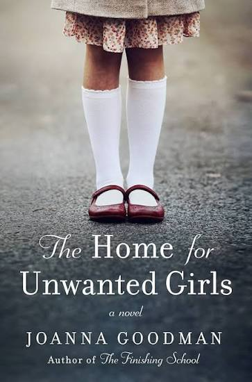

A COZY BOOKWORM CLUB
Find your next favorite story.
A welcoming place for curious readers, unforgettable books and conversations that continue long after the final page.
Explore the clubABOUT THE CLUB
A quiet corner for people who love stories.
Between the Pages is a friendly online book club for readers who enjoy discovering new voices, sharing thoughtful opinions and making time for a good book.
Every month we choose one featured title and explore more recommendations across different genres.

SEPTEMBER READING
The Home for Unwanted Girls
Set in 1950s Quebec and inspired by true events, the novel follows Maggie, a young unmarried mother forced to give up her baby, and Elodie, the daughter raised in a harsh orphanage system. Their intertwined stories reveal a powerful bond and a determined search for one another.
A moving historical novel about motherhood, injustice, resilience and hope.
Discover more books →